Jaar 1▾
Portfolio
Jaar 1
Villa
Het tweede project van het eerste jaar is het Villa project.
In dit project moesten we een villa ontwerpen voor een opdrachtgever
en omdat we vier schouwen hebben gaan we ook dieper in op bepaalde dingen van het project.
Architectuur
Het architectuur werkblad bestond uit een onderzoek over een gekozen bouwstijl, dit onderzoek moesten we in duo's uitvoeren en uiteindelijk los van de schouw presenteren. Bij dit onderzoek moesten we onder andere kenmerken van de bouwstijl opzoeken, maar ook referentie gebouwen die wel en niet in de buurt stonden, de gebouwen die wel in de buurt stonden moesten we bezoeken. De bouwstijl die ik moest onderzoeken was de Amsterdamse school bouwstijl, deze bouwstijl is uiteindelijk ook de stijl geworden van mijn villa.

Schouw 1
De eerste schouw van het villa project ging om het ontwerpen van de villa, de villas moesten in Blitsaerd komen te staan, in deze wijk mochten we zelf een kavel uitkiezen. Om ons een klein zetje in de goede richting te geven moesten we onderzoeken doen over een bouwstijl, deze bouwstijl kon de stijl van de villa worden. Net als bij Tiny House 1 was deze schouw voor de LUKs initëren en sturen.
Projectdefinitie
Voor het villa project kreeg iedereen een bouwstijl toegewezen, bij deze bouwstijl hoorde dan een docent als opdrachtgever. Ik heb Amsterdamse school gekregen als bouwstijl. Om erachter te komen wat voor villa de opdrachtgever wilde, is er met iedereen die dezelfde bouwstijl had en de opdrachtgever een gesprek geweest om te bespreken wat er moet komen te staan. Verder moest er uitgezocht worden waar in de wijk de villa het beste kon staan en wat de randvoorwaarden zijn.
Schetsontwerp
Ook voor het villa project moesten we een schetsontwerp maken, dit is een goede manier om de eerste ideën op papier te krijgen. Ik had voor de villa al een paar ideeën in mijn hoofd, er moesten namelijk vijf slaapkamers in de villa komen, een kantoor en een carport. Ik vind persoonlijk dat een slaapkamer niet op de begane grond thuis hoort, dus ik had meer kamers op de eerste (en tweede) verdieping. Hier is uit gekomen dat de eerste verdieping over de carport heen gaat en dan op het kantoor rust. Verder heb ik nog wat dingen toegevoegd zodat het een mooi ontwerp werd.
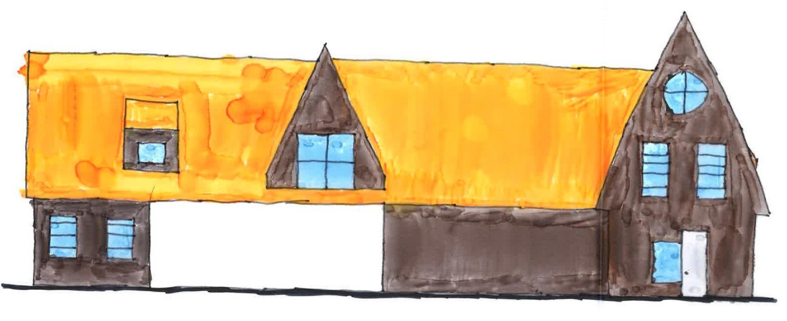
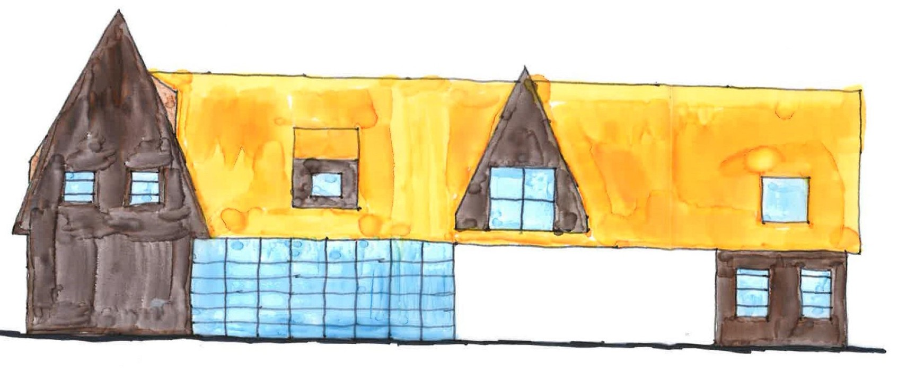
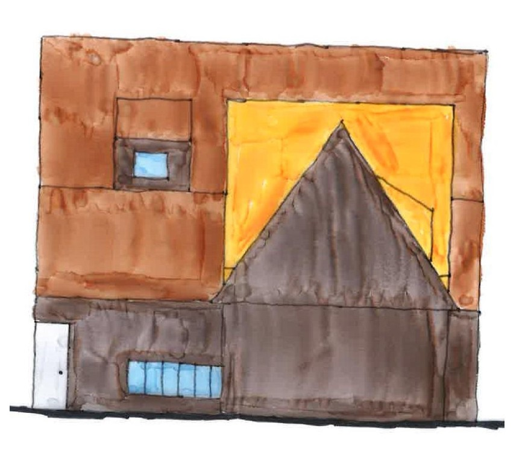
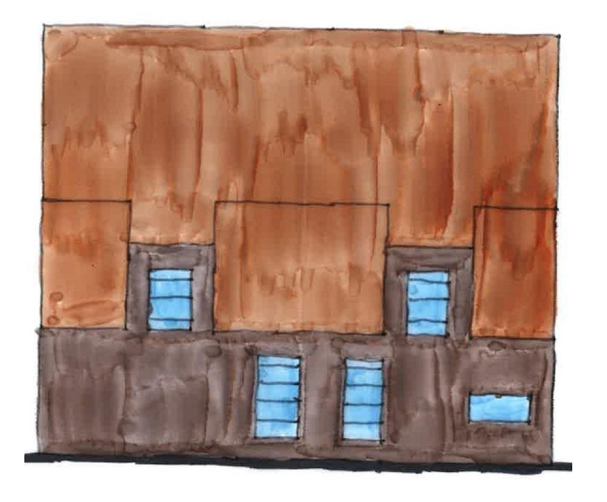
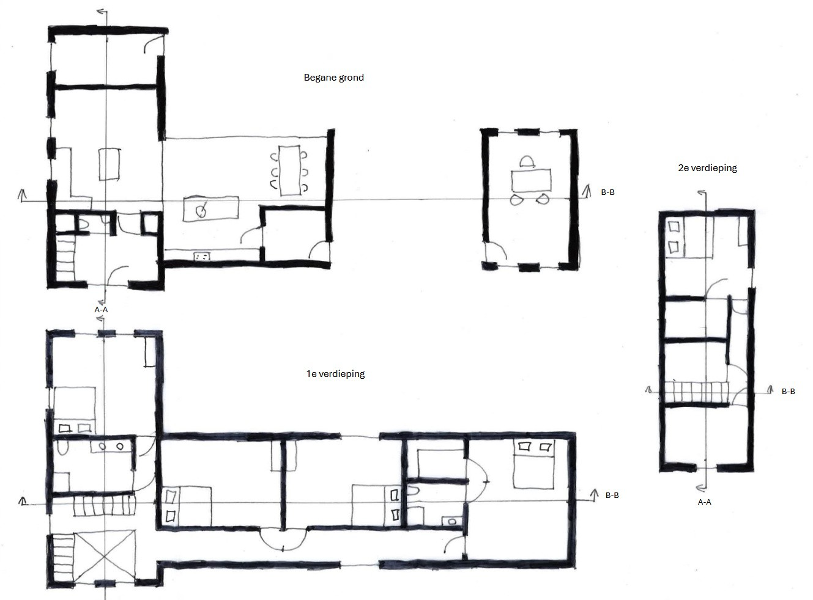
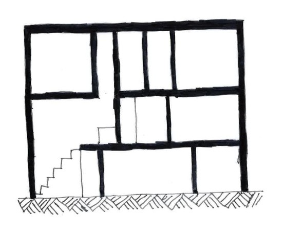
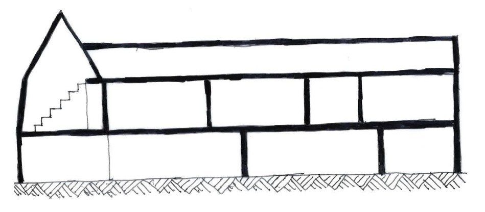
Feedback en Reflectie
Detail
Ook voor het villa project moesten we meerdere details tekenen, voor deze schouw begonnen we met een paalfundering met ringbalk, beganegrondvloer en gevel. Het tekenen van dit detail vond ik een stuk makkelijker omdat ik al een getekend had, ik wist dus beter wat ik aan het doen was.
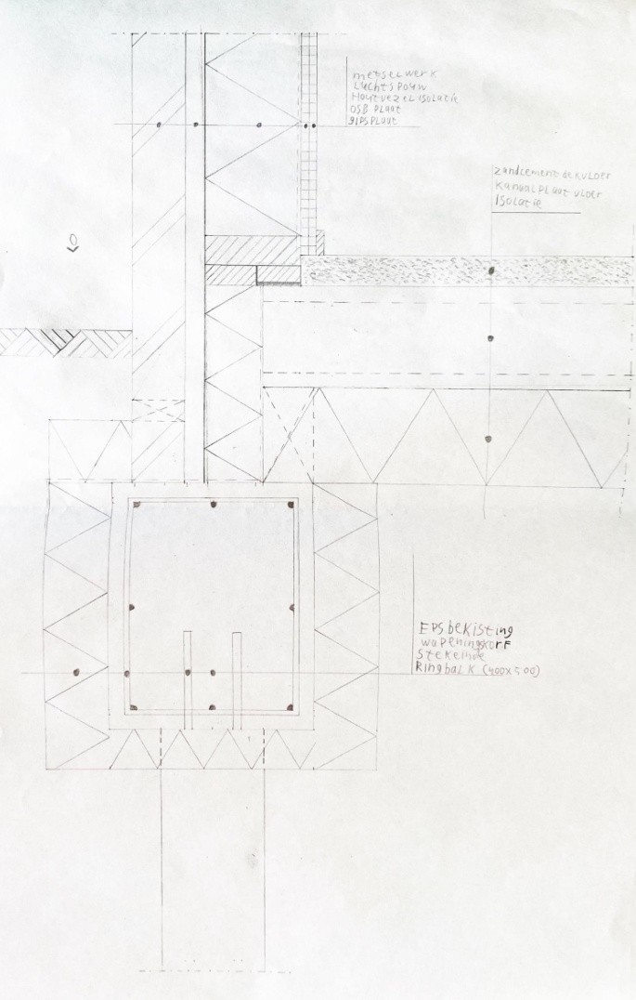
Schouw 2
Constructies
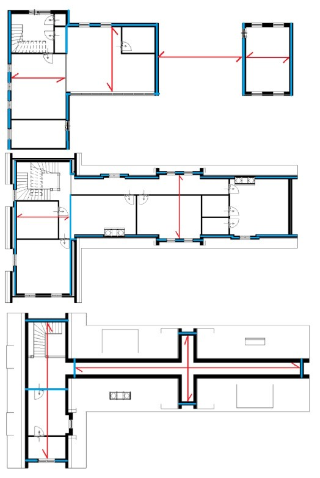
Bouwfysica en MCAs
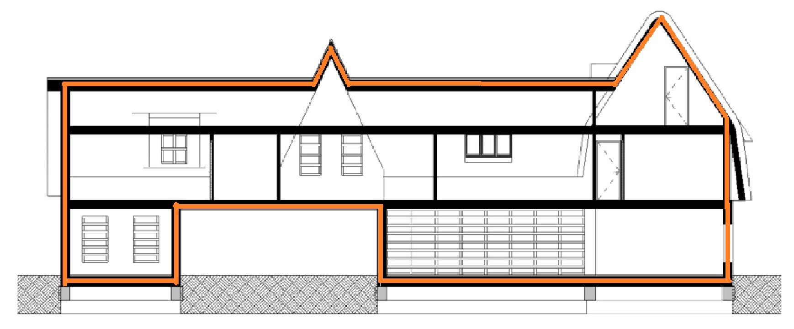
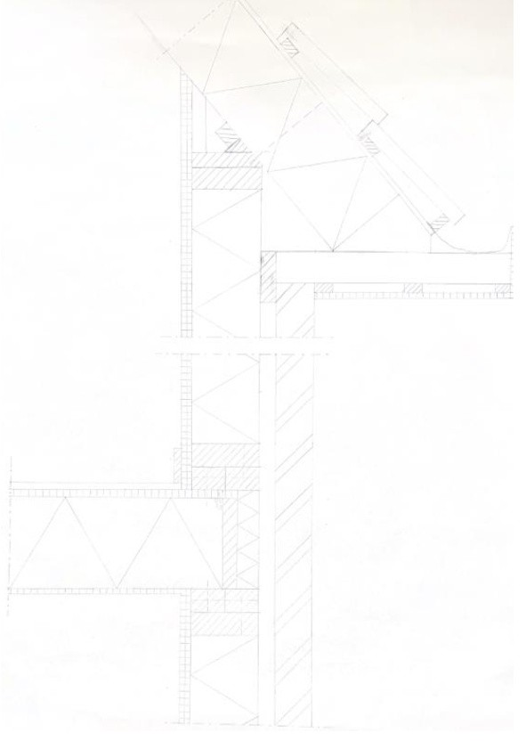